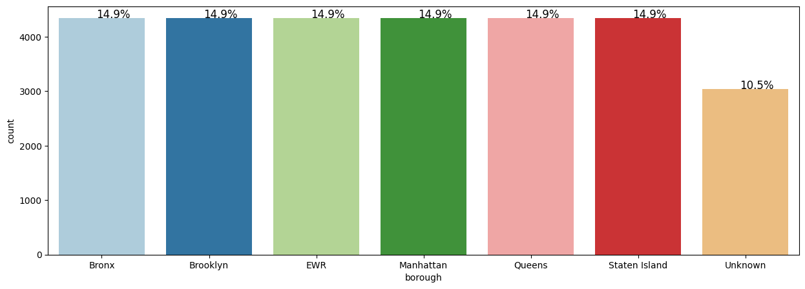
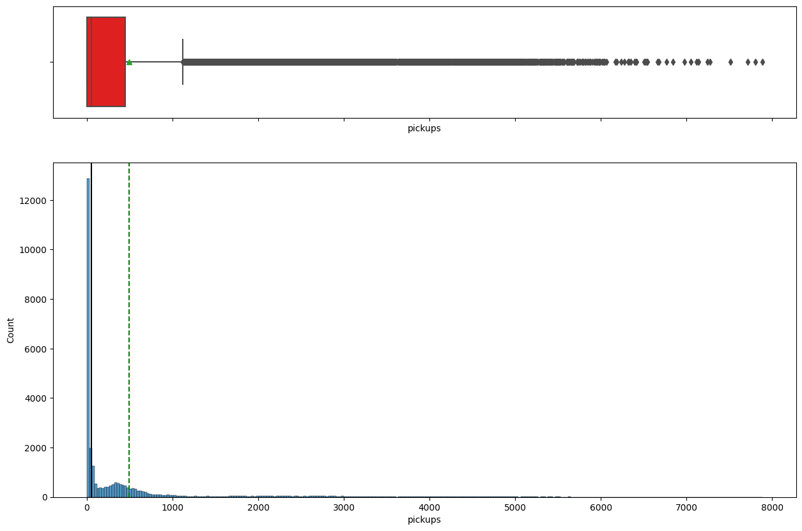
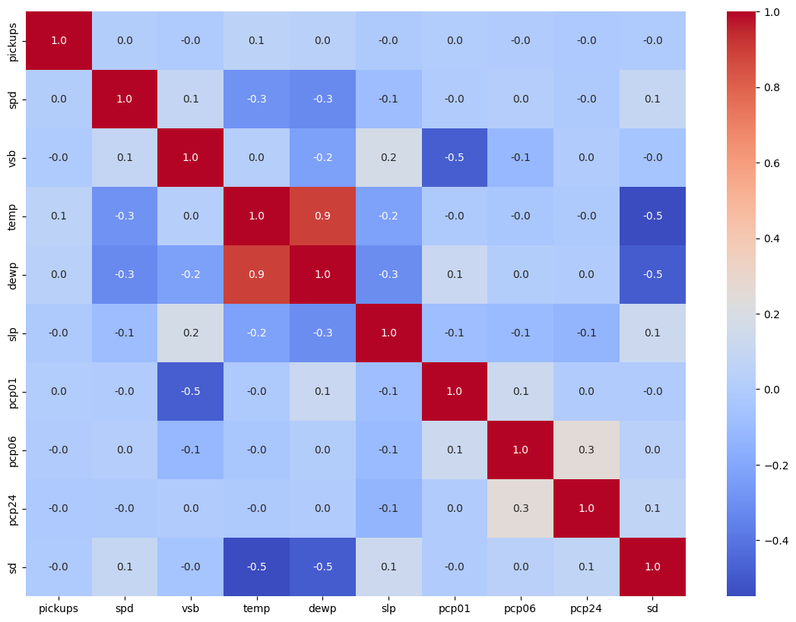
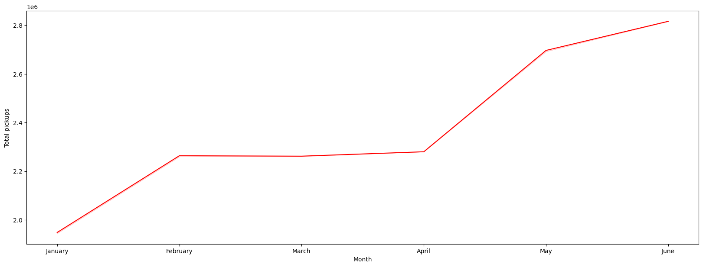
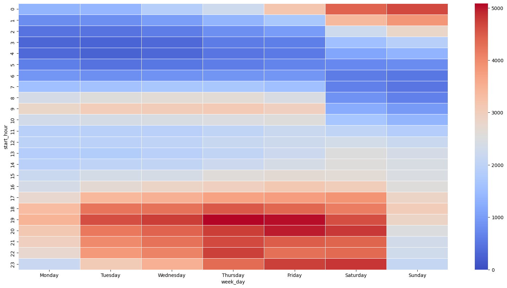
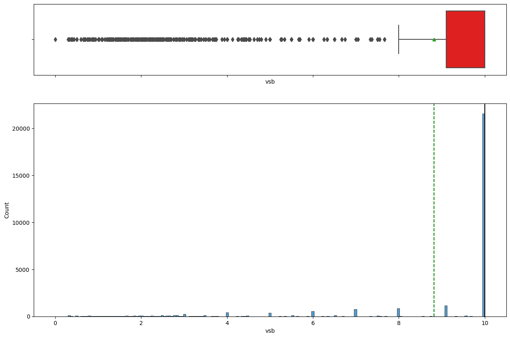
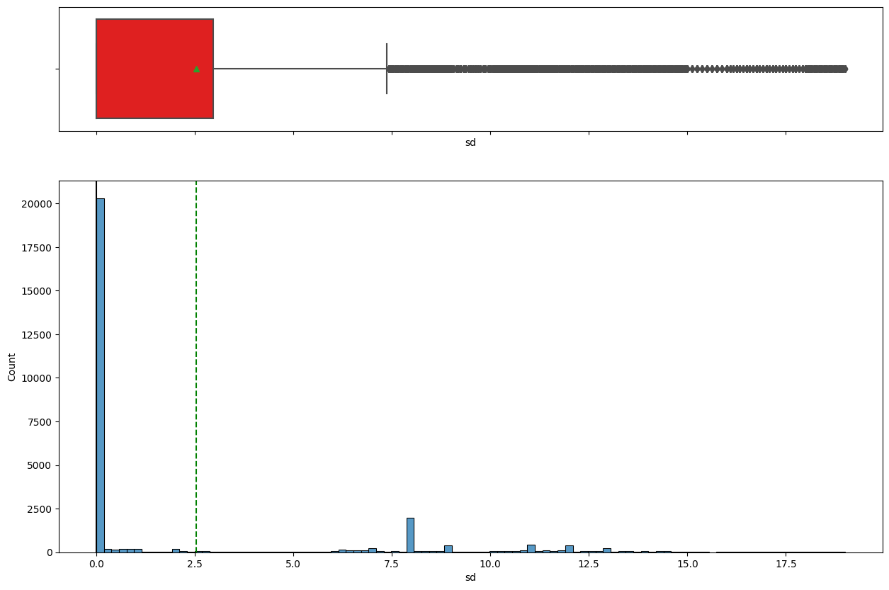
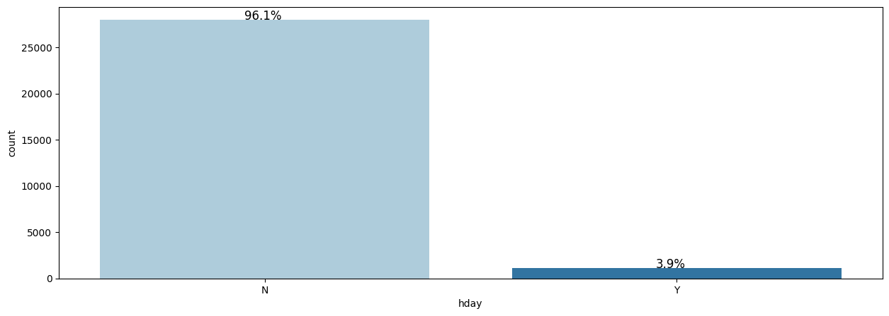
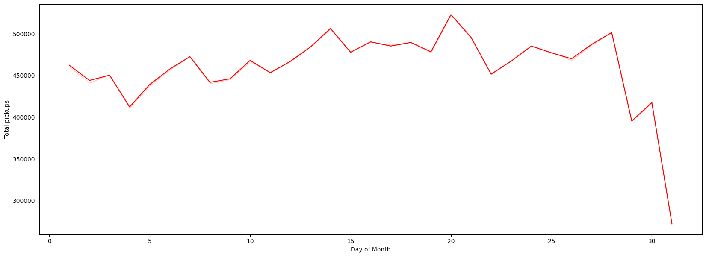

Overview
We studied half a year of New York Uber pickups to learn what times, places, and weather drive rider demand.
- Uber operates in ~72 countries and 10,500 cities, with 118M monthly active users as of Q4 2021.
- Goal: find patterns in hourly NYC pickups across boroughs, time, and weather.
- Identify peak hours, peak days, and the busiest boroughs to guide driver supply.
- Turn raw hourly logs into actionable demand insights for operations planning.
Methodology
flowchart LR A[Raw Data] --> B[Clean & Validate] B --> C[Univariate EDA] C --> D[Bivariate / Correlation] D --> E[Insights & Recommendations]
The Data
The dataset is 29,101 hourly records of NYC Uber pickups from January to June 2015, with weather and location fields.
- 29,101 rows and 13 columns spanning Jan 1 to Jun 30, 2015 (six months).
- Fields include pickupdt timestamp, borough, hourly pickups, plus weather (temp, visibility, snow depth).
- Borough had 3,043 missing values (~15%), treated as a separate 'Unknown' category.
- Six boroughs are nearly evenly represented; only 3.9% of days were holidays.
- pickupdt converted to DateTime; borough and hday set as categorical.

Exploratory Analysis
We charted how pickups vary and how weather and ride variables relate to each other.
- Hourly pickups are highly right-skewed: median is 0 but mean is ~500, with many high outliers.
- Visibility is left-skewed and generally good, with a few very-low-visibility outlier days.
- Snow depth shows snowfall in the period with outliers, expected to suppress pickups.
- Temperature shows high correlation with dew point; visibility is negatively correlated with precipitation.


Key Findings
Demand grew month over month and was heavily concentrated in Manhattan and in evening commute hours.
- Monthly bookings rose steadily; June pickups were almost 1.5x January.
- Pickups peak around the 20th of the month and drop near month-end (29th-31st).
- Demand rises through the week, peaks around Saturday, then drops; Mondays are lowest.
- Manhattan dominates pickups; Brooklyn and Queens trail; EWR, Staten Island, Unknown are negligible.
- Mean pickups are lower on holidays overall, though Queens sees higher holiday demand.

Insights & Recommendations
Pickups peak in the evening commute, so drivers should be concentrated in Manhattan during those hours.
- Bookings peak at the 19th-20th hour (evening commute) and bottom out around 5 AM.
- A secondary morning rise from 5-10 AM reflects the office commute.
- Late-night demand stays high on Friday and Saturday, especially in Manhattan.
- All four major boroughs share the same hourly pattern (clear on a log scale); EWR demand is near-random.
- Allocate the most drivers to Manhattan during weekday evenings and weekend late nights.

Key Takeaways
Uber NYC demand is predictable by hour, day, borough, and weather, enabling smarter driver allocation.
- Analyzed ~30K hourly pickup records across six NYC boroughs over six months of 2015.
- Demand is concentrated in Manhattan and peaks during evening commute hours.
- Weekly, monthly, and holiday patterns provide a basis for supply planning.
- Weather (snow, visibility) and time of day are key levers on ride demand.
- Built with: pandas, numpy, matplotlib, seaborn, datetime
More Visualizations




Tech Stack
- pandas — data wrangling and tabular manipulation
- numpy — fast numerical arrays
- seaborn — statistical visualization
- matplotlib — plotting
Attribution
This project was completed as part of the MIT Applied Data Science Program (MIT IDSS / Great Learning). The program provided the case-study scaffolding; the analysis, code, and results are my own. Published with permission, for portfolio use only.